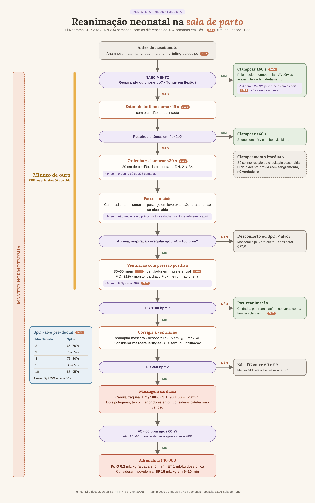
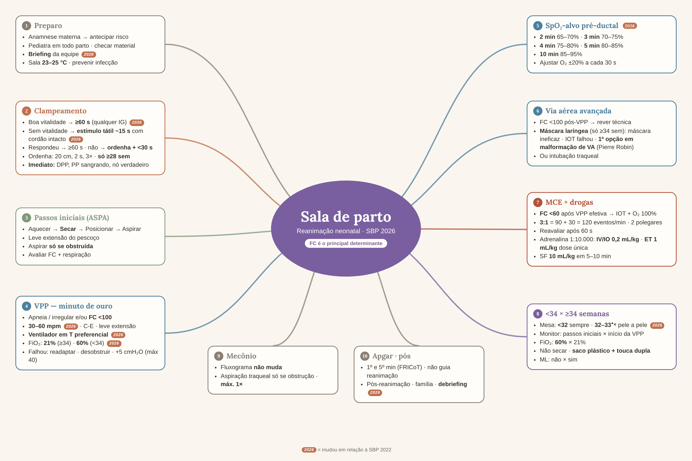

2022 → 2026: o que mudou
| Tema | Antes (SBP 2022) | Agora (SBP 2026) |
|---|---|---|
| RN sem boa vitalidade: estímulo e clampeamento cai | Estímulo tátil no dorso + clampeamento imediato → mesa de reanimação | Estímulo tátil no dorso ~15 s ANTES de clampear. • Respirou e tônus em flexão → clampear ≥60 s • Não respirou e/ou hipotônico → ordenha de cordão + clampear <30 s |
| Clampeamento em <34 sem com boa vitalidade cai | ≥30 s | ≥60 s — igual ao ≥34 sem (60 s em qualquer IG) |
| Ordenha de cordão novo | — | RN sem resposta ao estímulo. Em <34 sem: só se ≥28 sem. Técnica: ~20 cm do cordão, da placenta → RN, em 2 s, 3× |
| Clampeamento imediato | Qualquer RN sem boa vitalidade | Só se interrupção da circulação placentária: DPP, placenta prévia sangrando, nó verdadeiro de cordão |
| <34 sem vai pra mesa? cai | Sempre | <32 sem: sempre (passos iniciais na mesa) 32–33⁺⁶ sem: pele a pele com os pais se boa vitalidade |
| FiO₂ inicial da VPP <34 sem cai | 30% | 60%, titulando pela SpO₂ pré-ductal (≥34 sem segue 21%) |
| Frequência da VPP | 40–60 mpm | 30–60 mpm |
| SpO₂-alvo pré-ductal cai | Em faixas: até 5 min 70–80% · 5–10 min 80–90% · >10 min 85–95% | Minuto a minuto: 2 min 65–70 · 3 min 70–75 · 4 min 75–80 · 5 min 80–85 · 10 min 85–95% |
| Dispositivo de VPP | Balão autoinflável ou ventilador em T | Ventilador manual em T preferencial (pressões conhecidas e consistentes + PEEP) |
| Máscara laríngea | “Considerar” se VPP falha | Indicações explícitas, só ≥34 sem: máscara facial ineficaz · IOT não factível/falhou · 1ª opção em malformação de VA (Pierre Robin, Treacher Collins…) |
| Adrenalina | IV 0,01–0,03 mg/kg · ET 0,1 mg/kg | Mesma faixa, prescrita em mL/kg da 1:10.000: IV/IO 0,2 mL/kg (=0,02 mg/kg) · ET 1 mL/kg, dose única (=0,1 mg/kg). Via IO incluída |
| Expansor de volume | SF 10 mL/kg EV | SF 10 mL/kg EV em 5–10 min |
| Boa vitalidade ≥34 sem | Cuidados de rotina junto à mãe | Pele a pele + normotermia + VA pérvias + avaliar vitalidade + iniciar aleitamento |
| Fluxograma | Começa no nascimento | Começa com anamnese materna, checagem de material e briefing; termina com cuidados pós-reanimação, conversa com a família e debriefing |
O que NÃO mudou igual
- 2 perguntas de vitalidade: respirando/chorando? tônus em flexão?
- Passos iniciais “PóS-PArto”/ASPA: aquecer → secar → posicionar → aspirar (só se obstruída)
- Minuto de ouro: VPP nos primeiros 60 s · FiO₂ 21% no ≥34 sem
- FC é o principal determinante das manobras · cortes FC <100 (VPP) e <60 (MCE)
- MCE: exige IOT + O₂ 100%, 3:1, dois polegares, terço inferior do esterno, 60 s antes de reavaliar
- Mecônio: nada muda no fluxograma · Apgar igual (1º e 5º min)
⚠ Erro na apostila nova (pág. 7): o fluxograma <34 sem diz “VPP em ar ambiente”. A diretriz SBP 2026 <34 sem manda iniciar a VPP com O₂ a 60% (a própria tabela da pág. 8 traz 60%). Na prova, vá de 60%.
Fluxograma visual — SBP 2026
RN ≥34 semanas, com as diferenças do <34 semanas em lilás. Abrir em tamanho real ↗

Mapa mental

Antes do nascimento
- Anamnese materna → antecipar a necessidade de reanimação
- Equipe: todo nascimento deve ter um pediatra
- Checagem sistemática de material e equipamentos
- Briefing: planejamento, comunicação, preparo do ambiente/material, divisão de tarefas
- Temperatura da sala de parto 23–25 °C
- Prevenção de infecções
Fatores antenatais
- Idade materna <16 ou >35 anos
- Obesidade, diabetes, síndromes hipertensivas, doenças/infecção materna
- Drogas ilícitas
- Óbito fetal/neonatal anterior
- IG <39 ou ≥41 sem
- Sem pré-natal
- Gestação múltipla
- Discrepância IG × peso
- Poli/oligoâmnio · RPM
- Aloimunização/anemia fetal
- Sangramento 2º/3º tri
- ↓ atividade fetal
- Malformação · hidropsia fetal
Fatores do parto
- Cesárea · fórcipe/vácuo · apresentação não cefálica
- TPP · parto taquitócico
- Corioamnionite · RPM >18 h
- TP >24 h · 2º estágio >2 h
- FCF anormal · hipertonia uterina
- Anestesia geral · opioide nas 4 h prévias · sulfato de Mg
- Líquido meconial
- Prolapso/rotura/nó verdadeiro de cordão
- DPP · placenta prévia · sangramento intraparto
Clampeamento do cordão
Respirando ou chorando? Tônus em flexão?
SIM
Clampear ≥60 s
qualquer IG
qualquer IG
NÃO
Estímulo tátil no dorso ~15 s
antes de clampear
antes de clampear
respirou + tônus
Clampear ≥60 s
não respirou / hipotônico
Ordenha de cordão
(<34 sem: só se ≥28 sem)
Clampear <30 s
(<34 sem: só se ≥28 sem)
Clampear <30 s
Clampeamento imediato só se interrupção da circulação placentária: DPP, placenta prévia com sangramento, nó verdadeiro de cordão.
Ordenha: comprimir ~20 cm do cordão, da placenta em direção ao RN, ao longo de 2 s, 3 vezes.
Fluxograma RN ≥34 semanas
Anamnese materna · verificar material · briefing
↓ nascimento
≥34 sem? Respirando/chorando? Tônus em flexão?
SIM → clampear ≥60 s · pele a pele · normotermia · VA pérvias · avaliar vitalidade · aleitamento
↓ NÃO → estímulo tátil → reavalia → ainda NÃO
Passos iniciais — calor radiante · secar cabeça e corpo · pescoço em leve extensão · aspirar só se obstruída
↓
Apneia/respiração irregular e/ou FC <100?
NÃO → desconforto ou SpO₂ < alvo? → monitorar SpO₂ pré-ductal · considerar CPAP
↓ SIM — minuto de ouro (60 s)
VPP em ar ambiente (21%), 30–60 mpm
Eletrodos do monitor cardíaco + oxímetro
Eletrodos do monitor cardíaco + oxímetro
↓
FC <100?
Rever técnica · assegurar ventilação · considerar máscara laríngea ou IOT
↓
FC <60?
Cânula traqueal + MCE 3:1 + O₂ 100% · considerar cateterismo venoso
↓
FC <60?
Adrenalina intravascular · considerar hipovolemia
↓
Cuidados pós-reanimação · conversa com a família · debriefing
Manter normotermia durante todo o processo.
Fluxograma RN <34 semanas
Anamnese materna · verificar material · briefing
↓ nascimento
<34 sem? Respirando/chorando? Tônus em flexão?
SIM → clampear ≥60 s → 32–33 sem: pele a pele com os pais · <32 sem: passos iniciais na mesa
↓ NÃO → estímulo tátil → reavalia → ainda NÃO
Passos iniciais — calor radiante · saco plástico + touca dupla (não secar) · pescoço em leve extensão · aspirar só se obstruída · monitor cardíaco + oxímetro já aqui
↓
Apneia/respiração irregular e/ou FC <100?
NÃO → desconforto ou SpO₂ < alvo? → monitorar SpO₂ pré-ductal · considerar CPAP
↓ SIM — minuto de ouro (60 s)
VPP com O₂ a 60%, 30–60 mpm, titular pela SpO₂
↓ resto igual ao ≥34 sem (FC <100 → corrigir/IOT · FC <60 → MCE 3:1 + O₂ 100% → adrenalina)
<34 × ≥34 semanas
| <34 semanas | ≥34 semanas | |
|---|---|---|
| Clampeamento (boa vitalidade) | ≥60 s | ≥60 s |
| Ordenha | Só se ≥28 sem | Sim, se não responde ao estímulo |
| Vai pra mesa? | <32: sempre · 32–33⁺⁶: só se vitalidade ruim | Só se vitalidade ruim |
| Monitorização | Junto aos passos iniciais | Quando inicia a VPP |
| FiO₂ inicial VPP | 60% | 21% |
| Secar? | Não | Sim |
| Normotermia extra | Saco plástico + touca dupla | Touca de algodão |
| Máscara laríngea | Não | Sim |
Ventilação com pressão positiva
Como fazer
- RN em leve extensão · técnica do C-E
- 30–60 mpm
- Balão: “aperta/solta/solta”
- Ventilador em T (preferencial): “ocluuui/solta/solta”
- FiO₂ inicial: 21% (≥34) · 60% (<34) · ajustar pela SpO₂
SpO₂-alvo pré-ductal
| Min de vida | SpO₂ |
|---|---|
| 2 | 65–70% |
| 3 | 70–75% |
| 4 | 75–80% |
| 5 | 80–85% |
| 10 | 85–95% |
E se a VPP não funcionar?
| Problema | Correção |
|---|---|
| Ajuste inadequado face-máscara | Readaptar a máscara à face |
| Obstrução de VA | Reposicionar, aspirar boca e nariz, ventilar com a boca levemente aberta |
| Pressão insuficiente | Aumentar ~5 cmH₂O (máx. 40 cmH₂O) |
Máscara laríngea
- Dispositivo supraglótico — alternativa à máscara facial · só RN ≥34 sem
- Indicações: (1) VPP com máscara facial não efetiva · (2) IOT não factível ou sem sucesso · (3) 1ª opção em malformações de VA (Pierre Robin, Smith-Lemli-Opitz, Treacher Collins, Cornelia de Lange)
Massagem cardíaca e medicações
Massagem cardíaca (FC <60 após VPP efetiva)
- Exige intubação e O₂ 100%
- Terço inferior do esterno · dois polegares (mais eficiente e menos cansativa)
- Comprimir ⅓ do diâmetro AP e permitir reexpansão
- 3:1 sincronizada → 120 eventos/min (90 compressões + 30 ventilações)
- 60 s antes de reavaliar
| Adrenalina IV/IO | Adrenalina ET | Expansor de volume | |
|---|---|---|---|
| Diluição | 1:10.000 (1 mL + 9 mL SF) | 1:10.000 (1 mL + 9 mL SF) | SF 0,9% |
| Dose | 0,2 mL/kg = 0,02 mg/kg (faixa 0,01–0,03) | 1 mL/kg — dose única = 0,1 mg/kg | 10 mL/kg EV em 5–10 min |
Mecônio
Nada muda no fluxograma. Boa vitalidade ≥34 sem → pele a pele. Vitalidade ruim → passos iniciais (aspirar só se obstrução de VAS). FC <100 → VPP.
Aspiração traqueal: só se suspeita de obstrução de traqueia · cânula traqueal + dispositivo para mecônio + vácuo · máximo 1 vez · VPP logo em seguida, sem perder o minuto de ouro.
Apgar (1º e 5º min)
| Sinal | 0 | 1 | 2 |
|---|---|---|---|
| FC | Ausente | <100 | >100 |
| Respiração | Ausente | Irregular | Regular ou choro forte |
| Irritabilidade reflexa | Ausente | Careta | Choro ou retirada |
| Cor | Cianose/palidez | Corpo róseo, extremidades cianóticas | Todo róseo |
| Tônus | Flacidez | Alguma flexão | Movimentos ativos |